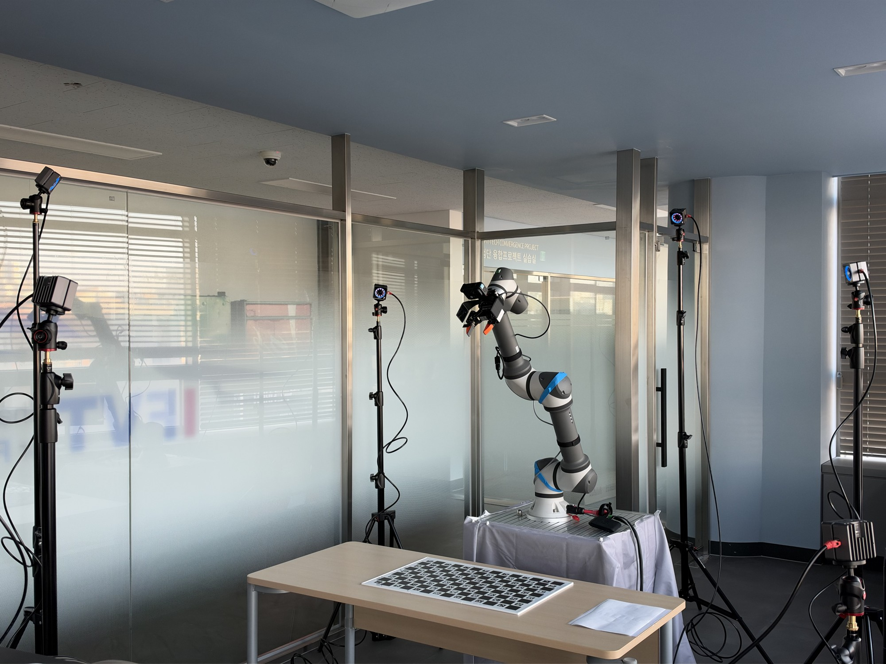

연구 프로젝트 · 인하대학교Research project · Inha University
Grouped Deletion Bounds를 이용한
RWHEC 해의 TLS 최적성 인증Grouped Deletion Bounds for Certifying
TLS Optimality in Robot–World
Hand–Eye Calibration
인하대학교Inha University
본 연구는 단일 LS dual solution으로 관측 그룹별 deletion bound를 구성하여 기존 RWHEC 해의 TLS 최적성을 인증한다. Singleton과 pairwise bound를 단계적으로 적용하는 cascade를 통해 제거 집합의 열거 없이 인증을 수행하고 계산 비용을 줄인다.We reuse a least-squares dual solution to bound the benefit of deleting observations. Combining singleton and pairwise bounds provides a numerical certificate of truncated least-squares optimality for full-support RWHEC candidates.
실험 구성과 좌표계Experimental setup and coordinate frames
RWHEC는 AᵢX = YBᵢ를 만족하는 두 고정 변환 X와 Y를 추정한다. X는 로봇 말단 기준 카메라 자세, Y는 로봇 베이스 기준 보드 자세이다. 각 관측 자세에서 forward kinematics로 Aᵢ를 구하고, 영상에서 추정한 카메라 기준 보드 자세를 역변환하여 Bᵢ를 구성한다. AᵢX와 YBᵢ는 모두 로봇 베이스 기준 카메라 자세를 나타낸다.RWHEC jointly estimates the fixed hand–camera transform X and base–board transform Y. At pose i, robot forward kinematics provides Aᵢ, while inversion of the image-based board pose provides Bᵢ. The two paths from the camera frame to the base frame must agree, giving AᵢX = YBᵢ.

관측한 로봇 말단 자세Observed robot hand pose
추정할 말단–카메라 변환Unknown hand–camera transform
추정할 베이스–보드 변환Unknown base–board transform
관측한 보드 자세의 역변환Inverse of observed board pose
는 b 좌표계의 점을 a 좌표계로 변환한다. 영상에서 추정한 보드 자세는 maps coordinates from frame b to frame a. Board pose estimation returns 이므로, ; therefore, 이다..
Grouped deletion boundsGrouped deletion bounds
TLS 목적함수는 정규화된 관측 비용을 1에서 절단한 뒤 합산한다. 본 연구는 모든 관측 비용이 cutoff 미만인 full-support 후보를 대상으로, 일부 관측을 제거하고 재최적화하더라도 TLS 비용이 감소하지 않는 충분조건을 검사한다.The TLS objective truncates each normalized observation cost at 1. For full-support candidates, we test sufficient conditions ensuring that deleting observations and reoptimizing cannot improve the objective.
TLS 최적성 인증What is certified?
LS의 전역 최적해도 TLS에서는 최적이 아닐 수 있다. TLS에서는 큰 잔차의 비용이 cutoff로 제한되므로, 일부 관측을 제외하고 재보정하면 전체 비용이 감소할 수 있다. 본 연구는 이러한 비용 감소 가능성을 검사하여 기존 RWHEC 후보의 TLS 최적성을 인증한다.A globally optimal LS solution need not be optimal for the TLS objective. Because TLS caps large residual costs, recalibration after discarding observations can potentially achieve a lower cost. Rather than introducing a new robust estimator, this work tests whether a supplied full-support candidate can be improved through observation deletion.
회전·병진 잔차의 가중 제곱합을 cutoff τ²로 나누어 관측 비용 qᵢ를 정규화한다. 모든 관측에서 qᵢ < 1인 실행 가능한 후보를 full-support 후보라 하고, 그 비용을 U로 정의한다. LS dual에서 얻은 global lower bound를 γ라 두고, 크기 k인 관측 집합을 제거했을 때의 비용 감소량을 제한한다.Each qᵢ is a weighted squared rotation-and-translation residual normalized by the cutoff τ². Full support means a feasible candidate with every qᵢ < 1. Let U denote the candidate cost and γ the global lower bound obtained from the LS dual; deletion bounds limit the possible improvement for each deletion-set size k.
- LS dual 재사용Reuse the LS dual
- LS SDP relaxation에서 얻은 dual solution으로 global lower bound와 관측별 비용 행렬을 구성한다.Construct a global lower bound and observation cost matrices from the LS SDP dual solution.
- Singleton · pairwise boundSingleton · pairwise bounds
- 개별 관측과 관측 쌍에 대한 spectral bound를 구성하여 관측 제거에 따른 비용 감소량을 제한한다.Bound the benefit of deleting observations using spectral bounds for single observations and pairs.
- Cascade 인증Cascade certification
- Singleton 조건을 먼저 검사하고, 통과하지 못한 경우에만 pairwise bound를 계산한다.Test the singleton condition first and compute pairwise bounds only when required.
Certification conditionCertification condition
Singleton bound는 개별 관측의 영향을 합산하고, pairwise bound는 관측 쌍의 spectral structure를 이용한다. 각 제거 개수 k에서 두 bound 중 작은 값을 사용한다. Cascade는 singleton 조건을 먼저 검사하므로, 이 조건을 통과한 경우 pairwise 계산을 생략할 수 있다.The singleton bound aggregates individual observation contributions, while the pairwise bound uses the spectral structure of observation pairs. Taking the smaller bound at each k can certify candidates that either bound alone cannot. The cascade skips pairwise computation whenever singleton already passes.
검사 범위는 k = 1, …, min(N, ⌊U⌋)이다. 다른 전제조건을 만족하고 이 범위의 모든 k에서 Bₖ < 1이면, 관측을 하나 이상 제거한 경우의 최소 비용은 U를 초과한다. k > U인 경우에는 제거 penalty만으로 비용이 U를 초과한다. 이때 TLS 최적값은 전체 LS 최적값과 같고 [γ, U]에 속한다. 수치 인증에서는 이 구간의 상대 primal–dual gap도 함께 확인한다.The test covers k = 1, …, min(N, ⌊U⌋). If the bound condition holds for every tested k, a solution deleting at least one observation cannot improve upon candidate cost U. For k > U, the deletion penalty alone exceeds U. With a sufficiently small LS optimality gap, this certifies agreement of the TLS and LS optimal values within numerical tolerance.
상대 primal–dual gap 기준은 10⁻⁶ 이하, bound 판정 기준은 Bₖ < 1 − 10⁻⁷, solver 허용오차는 10⁻¹⁰로 설정하였다. Full-support 조건과 positive definiteness 등 명제의 전제조건을 함께 확인하여 부동소수점 수치 인증을 수행하였다.The manuscript uses a relative primal–dual gap ≤ 10⁻⁶, a bound threshold Bₖ < 1 − 10⁻⁷, and solver tolerance 10⁻¹⁰. This is a floating-point numerical certificate that also checks full support, positive definiteness, and the remaining prerequisites.
데이터 취득 과정Data acquisition
이미지와 로봇 측정값은 sample ID로 대응시켰다. ChArUco 검출과 fisheye camera model로 보드 자세를 추정하고, 관절각과 RB5 URDF의 forward kinematics로 로봇 자세를 계산하였다. 공개 데이터는 저장된 이미지와 측정 기록으로 재현할 수 있으며, 실제 장비나 ROS 연결은 필요하지 않다.Images and robot measurements are paired by sample ID. ChArUco detection and a fisheye camera model provide board poses; joint angles and RB5 URDF forward kinematics provide robot poses. Reproducing the stored dataset requires no connected robot, camera, or ROS session.
수집한 64쌍 중 reprojection RMS가 1 px를 초과한 19쌍과 영상 내 보드 면적이 1% 미만인 1쌍을 제외하고 44쌍을 사용하였다. 관측은 영상 품질을 기준으로 선별하였으며, RWHE 잔차를 이용한 outlier 판정은 수행하지 않았다.Of 64 original pairs, 19 with reprojection RMS > 1 px and one with board image area < 1% were excluded by image-quality criteria, leaving 44 pairs. This selection is separate from outlier classification using RWHE residuals.
실험 결과Experimental results
실측 44쌍에서 후보와 정규화 전 가중치를 고정하고 cutoff에 따른 인증 결과를 비교하였다. 3.30–4.05의 16개 설정에서 singleton은 인증하지 못하였으나 pairwise와 cascade는 인증하였다.With a fixed candidate and weights on 44 real observations, pairwise and cascade certify 16 tested cutoff settings from 3.30 to 4.05 where singleton is inconclusive.
실측 데이터의 cutoff 분석Real data: cutoff sensitivity
기준 설정은 τ² = 4, 회전 가중치 125/4, 병진 가중치 5000/4이다. 동일 자료에서 후보 X/Y와 정규화 전 가중치를 고정하고 cutoff 1.5–5를 0.05 간격으로 검사하였으며, 1, 8, 16, 32를 추가하였다. 총 75개 cutoff에 대한 분석으로 인증 결과의 민감도를 확인하였다.The reference setting uses τ² = 4, normalized rotation weight 125/4, and translation weight 5000/4. With X/Y and pre-normalization weights fixed, the study tests 1.5–5 in steps of 0.05, plus 1, 8, 16, and 32, for 75 settings. These are sensitivity settings on one dataset, not 75 independent experiments.
4.10 이상의 시험값에서는 singleton도 인증하였다. Cutoff 1과 1.5는 full-support 조건을, 2–3의 시험값은 bound 조건을 만족하지 못하였다. Cutoff 32에서는 U < 1이므로 제거 검사가 불필요하였다.Singleton also certifies at tested values of 4.10 and above. Full support fails at cutoffs 1 and 1.5, while tested values from 2 to 3 fail the bound condition. At cutoff 32, U < 1, so an explicit deletion test is unnecessary.

계산 비용과 해석Computation and interpretation
기준 설정에서 동일 LS dual을 사용하는 fixed-dual enumeration은 149,985개 제거 집합을 평가하였다. 같은 회차의 3회 측정 중앙값은 pairwise 28.0 ms, enumeration 1176.6 ms로, 이 실측 사례에서 pairwise가 약 42배 빨랐다.At the reference setting, the three-run medians are 28.0 ms for pairwise and 1176.6 ms for fixed-dual enumeration using the same LS dual. Enumeration checks 149,985 deletion sets; pairwise is about 42× faster in this real-data case. This is a result for that setting, not a universal speed guarantee.
합성 실험은 일반 자세와 회전축 제한 자세에 대해 각각 140건을 구성하였다. 카메라 자세에 Gaussian noise를 추가하였으며 outlier는 추가하지 않았다. 일반 자세에서 singleton과 pairwise는 각각 62건, cascade는 65건을 인증하였다. 제한 자세에서는 singleton이 45건, pairwise와 cascade가 각각 52건을 인증하였다.The synthetic study contains 140 broad-motion and 140 limited-motion cases with Gaussian noise and no injected outliers. On broad motion, singleton and pairwise each certify 62 cases and cascade certifies 65. On limited motion, singleton certifies 45 and pairwise and cascade each certify 52.
| 운동 조건Motion regime | Singleton | Pairwise | Cascade |
|---|---|---|---|
| 일반 자세 · 140건Broad motion · 140 cases | 62 | 62 | 65 |
| 회전축 제한 자세 · 140건Limited motion · 140 cases | 45 | 52 | 52 |
사례별 3회 측정 시간의 중앙값을 합산하면, cascade는 pairwise보다 일반 자세에서 28.8%, 제한 자세에서 19.5%의 시간을 줄였다.Comparing sums of per-case three-run median runtimes, cascade reduces runtime relative to pairwise by 28.8% for broad motion and 19.5% for limited motion.
공개 코드는 실측 44쌍의 재현을 지원하며 합성 실험 코드는 포함하지 않는다. 인증은 지정된 목적함수에 대한 수치 검증으로, 물리적 절대 보정 정확도를 보장하지 않는다. 미인증만으로 비최적성을 의미하지 않는다.The release reproduces the real-data experiment; synthetic reproduction code is not included. Numerical certification concerns the specified objective and does not guarantee absolute physical accuracy. An inconclusive result does not imply suboptimality.
논문과 재현 자료Paper and reproduction materials
- 논문 원고 PDFManuscript PDF
- 공개 코드와 실측 데이터Public code and real dataset
- 실측 44쌍 재현 안내Real44 reproduction guide
인용 정보Citation
@unpublished{bae_grouped_deletion_bounds,
title = {Grouped Deletion Bounds for Certifying TLS
Optimality in Robot-World Hand-Eye Calibration},
author = {Bae, Jaeyoung and Kim, Byeongjun and Kim, Kwangki},
note = {Manuscript}
}